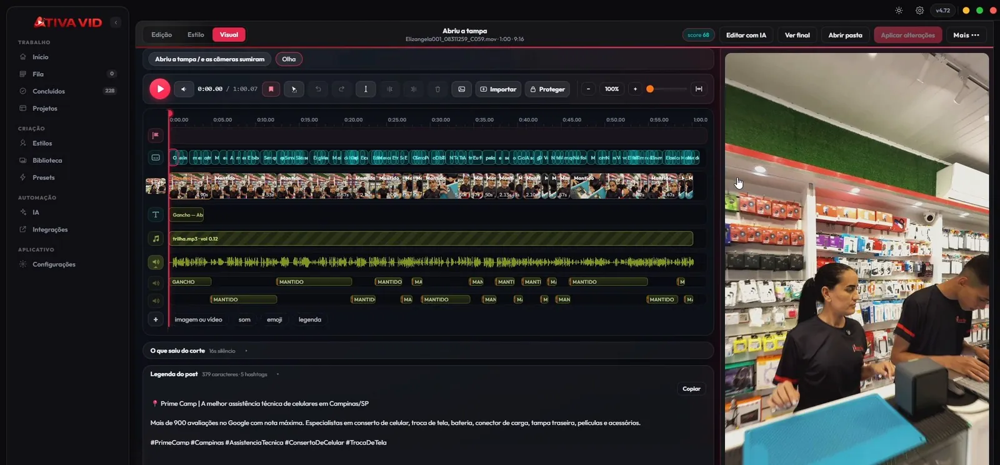
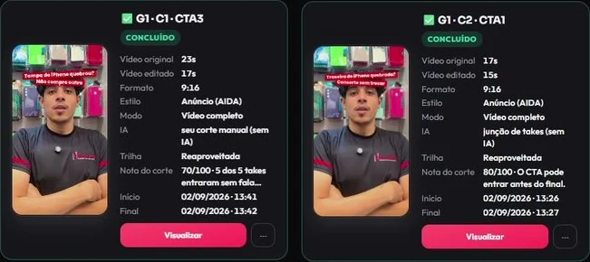
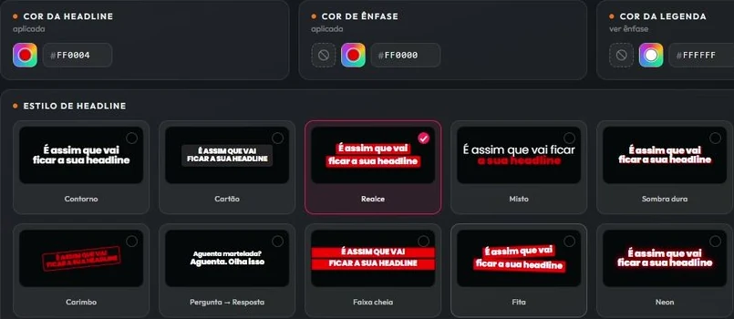
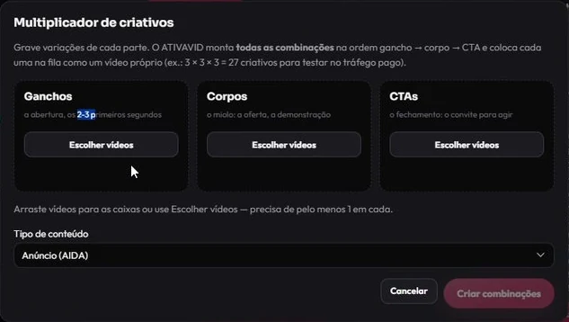
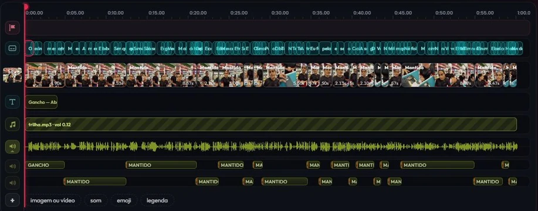
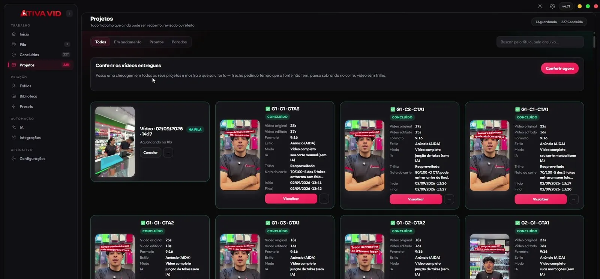

9h00 Grava no balcão e arrasta para o ATIVAVID.
Um vídeo, uma pasta ou vários takes do celular. O 4K HDR do iPhone entra direto. Clique em Editar com IA e volte para o cliente.
Arraste o vídeo bruto. Em 2 minutos o ATIVAVID devolve o vídeo cortado, sem silêncio nem erro, legendado no estilo da sua loja, com headline e capa, sem sair do seu computador.

Concluído 9h02
IMG_4813.MOV
50,2 s41,0 s
HeadlineQUANDO O CLIENTE VOLTA NO DIA SEGUINTE
LegendaOI, MOÇA, TUDO BEM?
Corte real de um vídeo da Prime Camp: 9 silêncios e 1 “Nossa,” que travava o ritmo. 9,2 s fora.
Quem planeja o corte e escreve a legenda do post é a sua conta de IA, paga ou gratuita. Você não compra crédito, não paga por minuto exportado e não paga por vídeo. A transcrição, o corte e o render rodam no seu computador.
A conta gratuita tem limite de uso. Se você edita muitos vídeos por dia, o plano pago que você já tenha na sua IA evita esperar o limite renovar.
Primeiro, um vídeo de verdade, do bruto ao post. Depois, o que mais o ATIVAVID faz pela loja. Tudo o que aparece aqui é tela real do app ou dado real da Prime Camp, a assistência de celulares onde o ATIVAVID nasceu.
Um vídeo, uma pasta ou vários takes do celular. O 4K HDR do iPhone entra direto. Clique em Editar com IA e volte para o cliente.
A IA tira o silêncio e o erro, escolhe o corte e aplica tudo no estilo da sua loja. Num vídeo típico da Prime Camp, 18% do bruto sai no corte.

Vídeo, capa e a legenda do post com hashtags, prontos para copiar. Vertical para Reels, Shorts e TikTok. Horizontal para o YouTube, com capítulos e o .srt do CC, sem exportar duas vezes.
✅ QUANDO O CLIENTE VOLTA NO DIA SEGUINTE
Aquele susto que todo técnico leva quando o cliente volta no dia seguinte! 😂
Mas calma: dessa vez foi só para indicar a família…
A pasta e a legenda que o ATIVAVID entregou para esse vídeo.
Cores, legenda, headline e hashtags. Todo vídeo sai com a sua cara, e suas fotos, takes e trilhas viram b-roll que a IA encaixa na frase certa.
Agência ou social media? Um estilo por cliente. Copie o estilo e cole nos outros projetos.

Cada take é uma gravação curta: 3 jeitos de abrir o vídeo (ganchos), 3 de apresentar a oferta (corpos) e 3 de chamar para a ação (CTAs). O Multiplicador combina todos entre si e entrega 27 vídeos diferentes, cada um legendado, com headline e capa, prontos para subir no gerenciador de anúncios.
Segundo a Nielsen, quase metade do resultado de vendas de uma campanha (47%) vem do criativo. Quem testa mais variações acha o anúncio vencedor mais rápido.
Roda tráfego pago? O criativo que perde custou 2 minutos de máquina, não uma tarde de edição.

Vídeo, legendas, headline, trilha, efeitos e b-roll, cada um na sua faixa. Arraste, corte, reenquadre.

Um Reel editado por freelancer custa até R$ 650 (estimativa de mercado). O ATIVAVID edita todos por R$ 59/mês.
Quanto você paga por vídeo hoje?
Faixas estimadas de preço de edição de Reel no Brasil; mediana estimada de R$ 200 por vídeo.
A conta da sua loja
Editando fora, por mês
R$ 4.500
R$ 54.000 por ano
Com o ATIVAVID, por mês
R$ 59
R$ 1,97 por vídeo
Sobra no seu caixa
R$ 4.441 /mês
76 vezes o valor da assinatura
7 dias grátis, sem cartão. Depois, menos que meio Reel de freelancer por mês. Você assina dentro do app.
Pro Mensal Oferta de lançamento
de R$ 99,90 por
R$59/mês
Menos de R$ 2 por vídeo se você posta um por dia.
Mais econômico
Pro Anual Oferta de lançamento
de R$ 899 por
R$399/ano
Sai por R$ 33,25 por mês — o que um editor cobra por um quarto de Reel.
Pro Escala
a partir de 2 computadores · agências e operações de tráfego
Sob consulta
Vários computadores editando ao mesmo tempo, várias marcas, centenas de vídeos por mês.
Oferta de lançamento
O ATIVAVID está em lançamento. Quando a oferta acabar, o valor passa a ser R$ 99,90 por mês e R$ 899 por ano. Quem assina agora entra pelo preço de lançamento.
Windows 10/11 (64 bits) ou Mac com chip Apple (macOS 12+) · a página de download escolhe o instalador certo
Zero risco: 7 dias de uso completo, sem cartão. Assinou e mudou de ideia? Cancela quando quiser. Seus vídeos, projetos e estilos ficam no seu computador, porque sempre estiveram lá.
| Comparação | Editar na mãoCapCut / Premiere | Ferramentas na nuvem | ATIVAVID |
|---|---|---|---|
| Tempo por vídeo curto | 40 min a 2 h | 10–20 min + upload | ~2 min |
| Custo por vídeo | seu tempo, ou R$ 120–650 por Reel (estimativa) | créditos por minuto | zero, roda no seu computador |
| Seu vídeo sai da máquina? | não | sim, sempre | não |
| Estilo da marca fixo | copiar projeto a projeto | templates genéricos | um estilo, todos os vídeos |
| Variações para tráfego | uma por uma | uma por uma | 27 de uma vez |
| Ajuste fino depois | sim | limitado | timeline completa |
| Funciona offline | sim | não | sim, depois de instalado |
O ATIVAVID nasceu na Prime Camp, uma assistência de celulares que precisava de vídeo todo dia. Desde agosto de 2026, mais de 600 vídeos da loja passaram por ele.

Você não precisa de:
Mesmo editor, mesmos estilos, mesma assinatura. A página de download reconhece o seu computador e entrega o instalador certo.
O instalador do Mac sai nos próximos dias. Mac com processador Intel ainda não é compatível. Uma assinatura vale para 1 computador, Windows ou Mac.
Não. Arraste o vídeo e clique em Editar com IA. A timeline existe para quem quiser ajustar.
Não. Transcrição, corte e render acontecem no seu computador. Só o texto da transcrição vai para a IA que planeja o corte, e você escolhe qual IA.
Não, nenhum. O roteiro do corte e a legenda do post usam a conta de IA que você já tem, paga ou gratuita. A conta gratuita tem limite de uso: se você edita muitos vídeos por dia, o plano pago que você já tenha na sua IA evita esperar. Transcrição, corte e render rodam no seu computador. Você paga o ATIVAVID e mais nada.
Roda em Windows 10 ou 11 (64 bits) e em Mac com chip Apple (M1 ou mais novo) com macOS 12 ou mais novo. No Windows, placa NVIDIA deixa tudo mais rápido; sem ela, funciona na CPU. O app faz o diagnóstico da máquina e diz o que esperar.
Clique na legenda e corrija. Marque o trecho e escreva "não corta aqui". Só o que mudou é refeito.
Sim. Horizontal sai com selo, capítulos, legenda e o .srt do CC. Vertical sai pronto para Reels, Shorts e TikTok.
Sim, em Mac com chip Apple (M1, M2, M3, M4 ou mais novo) e macOS 12 ou mais novo. Mac com processador Intel ainda não é compatível. A página de download reconhece o seu sistema e entrega o instalador certo.
O do Mac é maior porque já leva tudo dentro: abre, arrasta para Aplicativos e pronto. O do Windows é pequeno e baixa os componentes da IA no primeiro uso.
O app mostra os planos. Se não assinar, para de editar, mas seus vídeos e projetos continuam nas suas pastas. Assinou, volta na hora.
Baixe hoje, arraste um vídeo e veja o resultado. Preço de lançamento enquanto durar a oferta.
Windows 10/11 ou Mac com chip Apple · sem cartão · desinstala quando quiser
7 dias grátis · R$ 59/mês